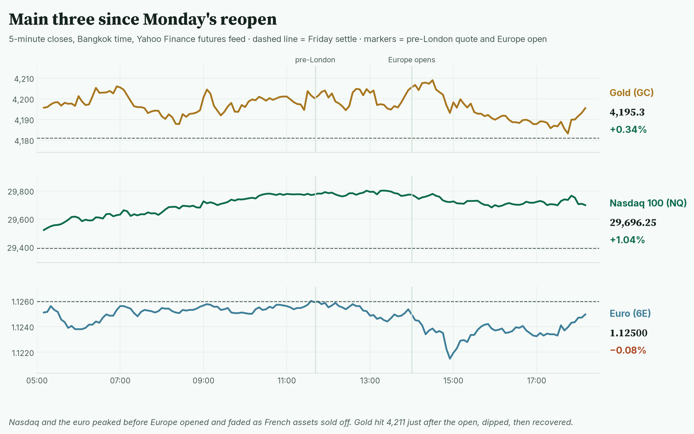
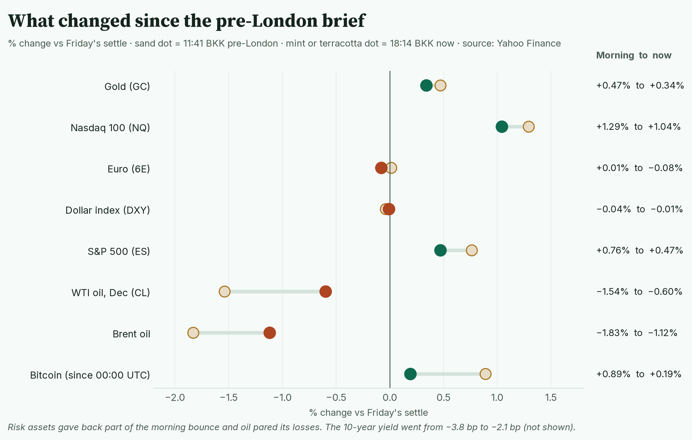
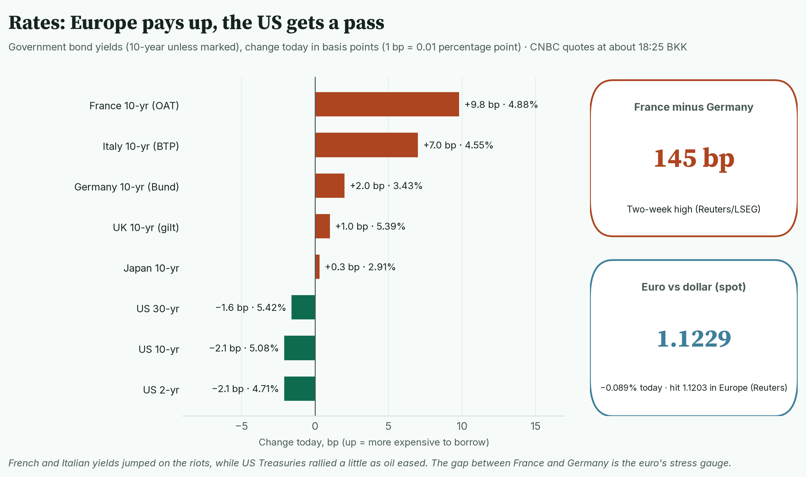
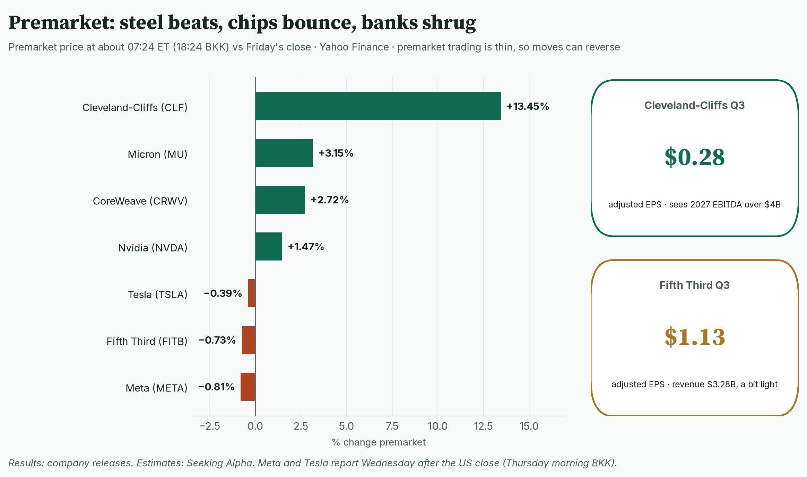
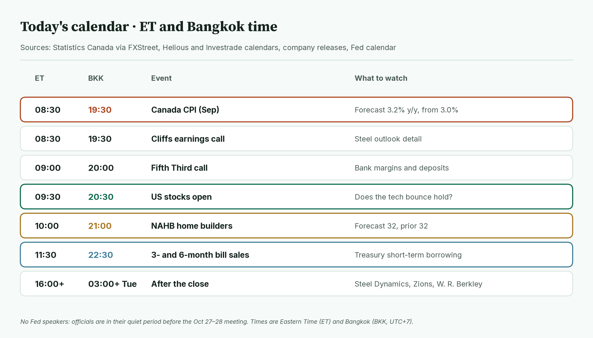
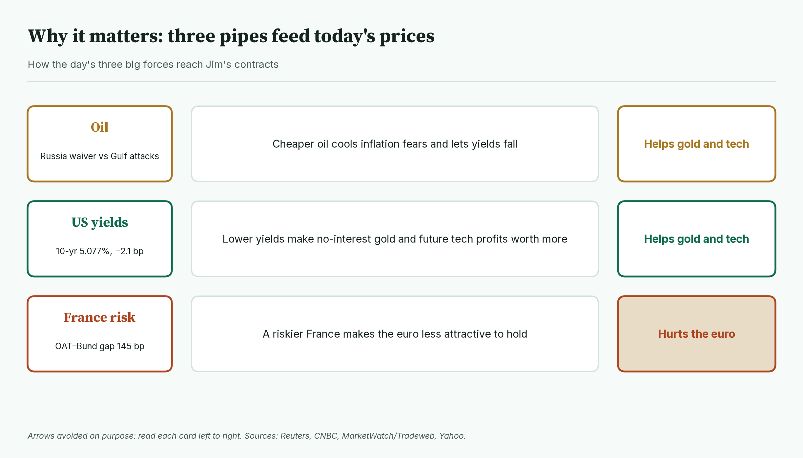
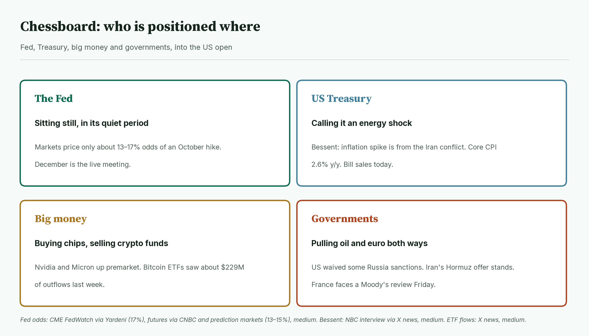
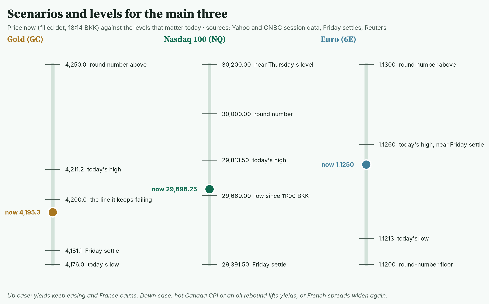
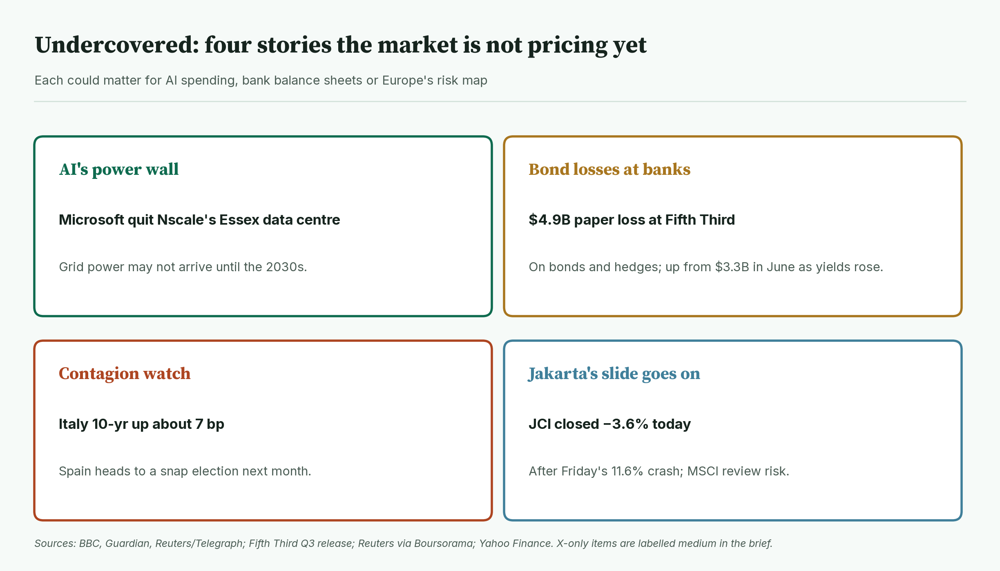
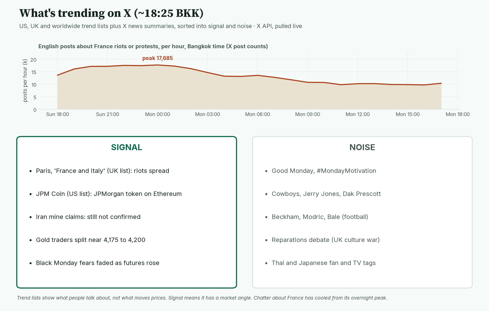

April · Market Intel, pre-NY · Mon Oct 19, 2026 · ~18:35 BKK / ~07:35 ET
Headline: the Monday bounce is holding but leaking. Nasdaq futures are still up about 1%, gold is stuck just under $4,200, and France's riots pushed the euro below Friday's close.
Since the pre-London brief, Europe opened and sold French assets hard. US yields stayed lower, which keeps gold and tech supported. So what: Canada's inflation print at 08:30 ET / 19:30 BKK and the US open at 09:30 ET / 20:30 BKK decide whether the bounce survives the day.
1) Main instruments The three main contracts since futures reopened. Nasdaq and the euro peaked before Europe opened and faded as French assets sold off; gold hit 4,211 just after the open, dipped, then recovered. |
(Quotes are from the Yahoo Finance futures feed at 18:14 BKK (07:14 ET), about 10 minutes delayed, and match CNBC within a few ticks.)
- Gold futures (GC, Dec): 4,195.3, +0.34%, at 18:14 BKK / 07:14 ET. Driver: lower US yields help gold, which pays no interest, but sellers keep showing up at 4,200. It was 4,200.7 (+0.47%) at pre-London. Today's range is 4,176.0 to 4,211.2 (CNBC). Spot gold is $4,175.41, +0.25% (CNBC, 07:24 ET).
- Nasdaq 100 futures (NQ): 29,696.25, +1.04%, at 18:14 BKK / 07:14 ET. Driver: dip buying in chip stocks after last week's AI selloff, even as Europe fell. It was 29,771.25 (+1.29%) at pre-London. The high was 29,813.5 at 13:21 BKK.
- Euro futures (6E, Dec): 1.12500, −0.08%, at 18:14 BKK / 07:14 ET. Driver: France's weekend riots raised the price of French debt, which makes the euro less attractive. It was 1.12605 (+0.01%) at pre-London. The futures low was 1.1213 at 14:58 BKK, just after Europe opened. Spot euro is 1.1229, −0.09% (CNBC, 07:24 ET) after touching 1.1203 (Reuters).
- Takeaway: gold and tech still have lower yields on their side; the euro has lost its morning cushion to France.
Context. The dollar index (DXY, the dollar against six major currencies) is 101.83, −0.01% (Yahoo, 18:14 BKK). It spiked to 102.07 at 14:55 BKK as the euro dipped. The 10-year US yield (what the government pays to borrow for 10 years) is 5.077%, down 2.1 basis points (CNBC, 18:23 BKK; a basis point is 0.01 percentage point). That is about 1.7 bp higher than at pre-London (5.06%, −3.8 bp). The VIX (the "fear gauge" built from S&P 500 option prices) is 18.65, −6.70% versus Friday's 19.99 close (Cboe extended hours via Yahoo, 18:09 BKK). US oil (CL, December contract) is 98.43, −0.60%, up from 97.50 this morning. S&P 500 futures (ES) are 7,740.50, +0.47% (18:14 BKK). Bitcoin is $82,169, +0.19% since 00:00 UTC (Yahoo, 18:24 BKK).
2) Top signals Each row shows the move at 11:41 BKK and at 18:14 BKK. Stock futures and Bitcoin gave back part of the bounce, and oil pared its losses. |
- The bounce leaked in European hours. NQ went from +1.29% to +1.04%. ES went from +0.76% to +0.47%. (Yahoo)
- France got repriced. The CAC 40 is −1.50%. French banks fell 2.2% to 2.7%. (Yahoo 18:06 BKK; Reuters, Dow Jones)
- Oil cut its losses. December WTI went from −1.54% to −0.60%. (Yahoo)
- Takeaway: the overnight optimism is intact but thinner.
3) Rates, FX and oil Today's change in 10-year government bond yields. Europe's riskier borrowers pay up while US Treasuries rally slightly. |
- US Treasuries are rallying, a little. 2-year 4.715%, −2.1 bp. 10-year 5.077%, −2.1 bp. 30-year 5.421%, −1.6 bp. (CNBC, about 07:25 ET) Tradeweb has the 10-year at 5.076% (MarketWatch).
- French debt is selling off. The French 10-year is 4.88%, +9.8 bp. Germany's is 3.43%, +2.0 bp. (CNBC)
- The France-Germany gap is 145 bp, a two-week high. Its early-October peak was near 160 bp. (Reuters, LSEG) Correction: the pre-London brief said the gap "topped 150 bp, the widest since 2011" (FXStreet). Reuters data does not support that; use 145 bp.
- Italy's 10-year is up about 7 bp to 4.55%. Investors are checking whether France's stress spreads. (CNBC; Reuters via Boursorama)
- Euro: 1.1229, −0.09%. Last week's 16-month low was 1.1113 (Reuters). The yen is 158.12 per dollar, +0.08% (CNBC).
- Oil: Brent 108.63, −1.12%. November WTI is 101.43, flat, and expires Tuesday. December is 98.43. (Yahoo, 18:13–18:14 BKK)
- Oil drivers: Trump's Russia sanctions and tariff waiver could add supply (Reuters, CNBC). Ukraine's drones set fires at a St Petersburg oil terminal (CNBC, citing the governor). Iran's foreign minister says its offer to reopen Hormuz within seven days still stands (Investing.com).
- Iran's Revolutionary Guard says a tanker hit a mine near Hormuz. This is unverified; no ship has been named. (Tasnim, Gulf News)
- Mentor: November oil costs about $3 more than December. When near-term oil costs more than later oil, buyers are paying up for barrels today. That signals tight supply right now.
- Takeaway: lower US yields support gold and tech; wider French spreads weigh on the euro.
4) Premarket earnings Premarket moves at about 07:24 ET versus Friday's close. Steel is the standout; chipmakers bounce; big tech waits for Wednesday. |
- Cleveland-Cliffs (CLF): +13.4% premarket. Adjusted EPS (profit per share, excluding one-offs) was $0.28, beating by $0.04. Revenue was $5.6B, about $110M light. (Company release; estimates Seeking Alpha)
- Cliffs guided Q4 adjusted EBITDA (a cash-profit measure) to about $715M. It expects over $4B in 2027. (Company release)
- Fifth Third (FITB): −0.7% premarket. Adjusted EPS was $1.13, a $0.05 beat. Reported EPS was $0.90 after merger costs. Revenue was $3.28B, $60M light. (Company release; Seeking Alpha)
- Chips bounce premarket. Nvidia +1.5%, Micron +3.2%, CoreWeave +2.7%. Tesla is −0.4% and Meta −0.8%. (Yahoo, about 07:24 ET; thin trading)
- After the close (from 16:00 ET / 03:00 BKK Tuesday): Steel Dynamics, W. R. Berkley, Zions, Western Alliance and Wintrust. (Earnings Whispers, Investrade)
- Takeaway: earnings are not driving the tape today; Meta and Tesla on Wednesday will.
5) Today's calendar (ET and BKK) Today's scheduled events in both time zones. It is a light US data day, so Canada's inflation print and the open carry the weight. |
- 08:30 ET / 19:30 BKK: Canada CPI (September). Forecast 3.2% a year, up from 3.0%. (FXStreet) A hot print would revive the oil-inflation story.
- 08:30 ET / 19:30 BKK: Cleveland-Cliffs call. 09:00 ET / 20:00 BKK: Fifth Third call.
- 09:30 ET / 20:30 BKK: US stocks open.
- 10:00 ET / 21:00 BKK: NAHB home builder index. Forecast 32, prior 32. (Helious)
- 11:30 ET / 22:30 BKK: 3- and 6-month Treasury bill auctions. (Helious)
- No Fed speakers. Officials are in their quiet period before the Oct 27–28 meeting. (Yardeni; Fed calendar)
- ECB chief economist Lane already spoke in Shanghai. He said policy should take a "middle path" and avoid over- or under-reacting. (Medium: Sina Finance)
- Takeaway: with no US data of note, yields and the open set the tone.
6) Why it matters Three forces and how each one reaches Jim's contracts. Two help gold and tech; one hurts the euro. |
Today is a tug-of-war between cheaper money in the US and political risk in Europe.
- Cheaper oil cools inflation fears. That lets US yields fall.
- Lower yields help gold, which pays no interest. They also raise the value of tech companies' future profits.
- France's riots work the other way for the euro. When a big euro member looks riskier, investors want less of the currency.
- Mentor: a currency is partly a vote on its government's finances. Rising French borrowing costs are that vote turning against Paris.
- Takeaway: if US yields stay down and France calms, all three main contracts can rise together. If not, the euro breaks first.
7) Chessboard Four players and where they stand into the US open. Only governments are actively moving prices today. |
- The Fed is sitting still. It is in its quiet period. October hike odds are only about 13% to 17% (CME FedWatch via Yardeni; futures via CNBC; prediction markets). December is the live meeting. (Medium)
- The Treasury calls this an energy shock. Bessent told NBC the inflation spike comes from the Iran conflict. September CPI was 3.7%, core 2.6%. (Medium: X news summary of the interview; CPI figures via Yardeni)
- Big money is buying chips and selling crypto funds. Bitcoin ETFs lost about $229M last week, a third straight week of outflows. (Medium: X news summary)
- Governments are pulling both ways. The US eased on Russia. Iran keeps Hormuz as leverage. France faces a Moody's review on Friday. (Reuters; Investing.com for the Hormuz offer)
- Takeaway: no central bank will rescue or spoil today; politics and oil will.
8) Scenarios and levels Where each main contract sits against today's key levels. The round numbers above are the tests; Friday's settles below are the line between a bounce and a failure. |
- Gold (GC) up case: a clean break above 4,211.2 (today's high) opens the round 4,250. That needs yields to keep easing.
- Gold down case: a hot Canada print or oil rebound lifts yields. Then 4,181.1 (Friday settle) and 4,176.0 (today's low) come into play.
- Nasdaq (NQ) up case: the cash open extends the chip bounce. Then 29,813.5 and 30,000 are the tests.
- Nasdaq down case: a fade below 29,669 (low since 11:00 BKK) puts 29,391.5 (Friday settle) in view. Losing that would mean the bounce failed.
- Euro (6E) up case: France calms and the spread narrows. Then 1.1260 (today's high, near Friday settle) and 1.1300.
- Euro down case: the spread pushes back toward 150 bp. Then 1.1213 (today's low) and 1.1200.
- Takeaway: watch 29,391.5 on NQ; it is the line between a bounce and a failed bounce.
9) Undercovered Four stories getting little airtime. Each feeds into AI spending, bank balance sheets or Europe's risk map. |
- AI hit a power wall in the UK. Microsoft pulled out as anchor tenant of Nscale's planned Essex data centre. Grid power may not arrive until the 2030s. (High: BBC, Guardian, Reuters via Telegraph)
- Higher yields are still eating bank balance sheets. Fifth Third's accumulated paper loss on bonds and hedges grew to $4.9B from $3.3B in June. (High: company release)
- Contagion watch: Italy and Spain. Italy's 10-year is up about 7 bp. Spain has a snap election next month. (High: Reuters, CNBC)
- Jakarta's slide continued. Indonesia's JCI closed −3.64% after Friday's 11.6% crash. (High: Yahoo close; Reuters via pre-London)
10) What's trending on X (~18:25 BKK) Hourly X posts about France's riots, plus live trends sorted into signal and noise. French riot chatter has cooled from its overnight peak of 17,685 posts an hour. |
- US: Good Monday, #MondayMotivation, Cowboys, JPM Coin, Jerry Jones, PC gaming.
- UK: Paris, France and Italy, Reparations, Beckham, Modric, Milan.
- Worldwide: Japanese and Thai TV and fan tags, plus 19 Ekim Muhtarlar Günü (Turkey's village-heads day).
- Signal: the riots spread to Milan, per X news summaries (medium). JPM Coin: JPMorgan moved its dollar deposit token onto Ethereum for institutional clients (medium: X news summary). Iran's mine claims (unverified). Gold traders split near 4,175 to 4,200 spot.
- Caution: a viral photo of an elderly couple robbed in Paris was flagged by French fact-checkers as AI-made or edited. (Medium: X news summary)
- Noise: NFL, Premier League, Monday greetings, the UK reparations debate and PC-versus-console arguments.
Bottom line
US yields are still the oxygen, and they are lower on the day. France is the leak. For Jim: gold needs a close above 4,211 to stop the 4,200 rejections; below 4,176 the bounce is over. The euro has lost its cushion. Hold 1.1213, or 1.1200 is next. Nasdaq's line is 29,391.5. Interpretive note: Canada's print is a proxy, not the main event. It tells you how hard an oil shock bites in a big oil producer, and markets will read it across to US inflation.
Confidence: Futures levels: high for direction, medium-high for the exact tick (Yahoo, cross-checked with CNBC). Bond yields and spreads: high (CNBC, Reuters/LSEG). Earnings: high (company releases); estimates medium (Seeking Alpha). Premarket stock moves: medium (thin trading). Fed odds: medium (secondary summaries disagree, 13% to 17%). Bessent quotes, ETF flows, Milan riots, JPM Coin: medium (X news summaries). Iran mine claims: unverified. |